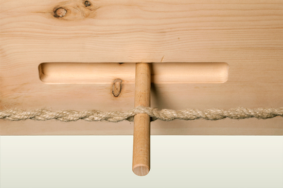

Wir machen mit Liebe das,
worauf andere Liebe machen.
Spannmichein, dein Zirbenbett.
Das Spannmichein ist ein metallfreies Zirbenbett mit hohem Liegekomfort.
Die Kunst ein metall-freies Bett zu bauen liegt darin, eine Verbindung zu schaffen, die lösbar ist, aber im zusammen gebauten Zustand den Rahmen unter Spannung hält. Ohne diese Spannung läuft man Gefahr, dass irgendwann Knarrgeräusche entstehen können.
Auf der Suche nach einer einfachen Lösung ist uns die Eigenschaft von einem uralten Werkzeug aufgefallen. Die Spannsäge (Gestellsäge), sie ist die Mutter dieser Konstruktion. Durch einfaches Eindrehen eines Seiles entsteht eine Eigenspannung, die dauerhaft hält und bei Bedarf wieder einfach gelöst werden kann. Diese Eigenschaft wurde in der Vergangenheit von vielen Handwerkern besonders im traditionellen Schiffsbau genutzt und ist heute leider etwas in Vergessenheit geraten.

Holz an Holz könnte unter Belastung knarren. Spannmichein knarrt nicht, da alle kritschen Bereiche mit Rindleder gepuffert sind.
Spannmichein wird fix fertig angeboten. Man muß nichts selber verknoten. Das Zirbenbett kann von einer Person zusammengebaut werden (zusammenzurren zu zweit ist aber gewiss spannender). Denn: alle Teile sind per Hanfseil miteinander verbunden, lose Teile gibt es nicht.
Das Spannmichein ist ein
reines Naturprodukt und wird in Handarbeit hergestellt.
Gefertigt aus Zirbenholz. Das edle Zirbenholz wurde kammer-getrocknet oder luft-getrocknet. Rar ist Zirbenholz, wenn es mondphasengerecht geschlägert wird. Auch diese Variante gibt es.
"Im Schlaf zeigte sich eine deutlich bessere Schlafqualität im Zirbenholzbett im Vergleich zu einem Holzdekorbett. Die bessere Nachterholung geht mit einer reduzierten Herzfrequenz und einer erhöhten Schwingung des Organismus im Tagesverlauf einher. Die durchschnittliche „Ersparnis“ im Zirbenholzbett lag bei 3500 Herzschlägen pro Tag, was etwa einer Stunde Herzarbeit entspricht." (Auszug aus einer Studie zur Wirkung von Zirbenholz des Joanneum Research IND-WEIZ).
Noch Fragen? Wünsche, Bestellungen?
tel: +43 660 681 08 60
peter (at) tischlereiholzer.com
Innenmaße: Breiten in 140, 160, 180, 200 cm
Länge: 200 cm
Außenmaße: Innenmaß + 12 cm
Länge: 206 cm
Höhe Haupt: 80 cm
Höhe Bettrahmen: 32 cm
Einsprung (von Oberkante Rahmen bis
Auflagepunkt für Lattenrost): 13 cm